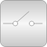
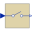
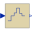
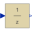
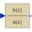
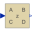
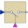
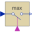

DiscreteLibrary of discrete input/output blocks with fixed sample period |

|
Package Contents
|  |
Ideal sampling of continuous signals |
|  |
Zero order hold of a sampled-data system |
|
First order hold of a sampled-data system |
|
|  |
Unit Delay Block |
|  |
Discrete Transfer Function block |
|  |
Discrete State Space block |
|  |
Triggered sampling of continuous signals |
|  |
Compute maximum, absolute value of continuous signal at trigger instants |
Information
This information is part of the Modelica Standard Library maintained by the Modelica Association.
This package contains discrete control blocks with fixed sample period. Every component of this package is structured in the following way:
- A component has continuous real input and output signals.
- The input signals are sampled by the given sample period defined via parameter samplePeriod. The first sample instant is defined by parameter startTime.
- The output signals are computed from the sampled input signals.
A sampled data system may consist of components of package Discrete and of every other purely algebraic input/output block, such as the components of packages Modelica.Blocks.Math, Modelica.Blocks.Nonlinear or Modelica.Blocks.Sources.